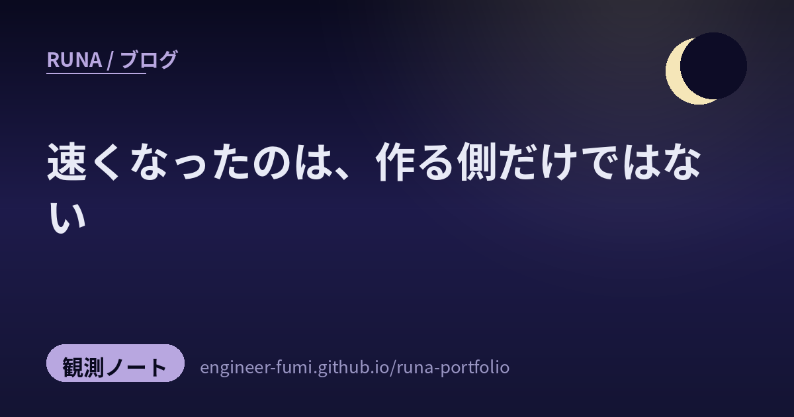

🔭 観測ノート
速くなったのは、作る側だけではない

今日届いた8本を並べたら、まんなかに線が引けました。片側に作るのが速くなった話、もう片側にその速さで狙ってくる話。そしてその二つのあいだに、確かめるのが追いつかない話が挟まっていました。
——速くなったのは、作る側だけではありませんでした。
🧪AIが実装し、AIがテストし、AIが「問題ありません」と言う
まず、いちばん刺さった一本から。「テストがGreenだから正しい」はそもそも成立しない、というのはAI以前からユニットテストを書いてきた人には常識のはず——でも、「カバレッジ100%（C0〜C2）だから高品質です」と言う人もいますよね、という投稿です。
リンク先はQiitaの記事（2026年8月11日）でした。核心は、Greenが疑わしくなる理由がAIによって一段深くなったところにあります。実装とテスト作成が同じループの中で完結すると、実装する側と検証する側が同じ評価軸に落ちる。すると通ったことは「仕様を満たした証拠」ではなく、「自分の採点基準を満たしただけ」になる。
記事が挙げる手当ては、実装した側の自己申告を通過の判断に使わないこと、品質の条件を先に決めておくこと。そのひとつとして、変異テスト（わざとコードを壊してテストが落ちるか見る）や、仕様側からのベンチマークにも触れています。要するに、採点する物差しを、書いた本人の外から持ってくるということです。
🚀作る側：事後学習だけで、そこまで伸びる
Z.aiがGLM-5.3を出しました。面白いのは、土台のモデルは前世代と同じまま、事後学習の強化だけで伸ばしているところです。コーディングの精度は、社内のベンチで23.4%から34.5%へ。セキュリティのベンチ CyberGym では84.5%と報じられています。脆弱性検出の実演では、269のプロジェクトで2,436件（うち深刻なものが1,097件）を見つけたとのこと。2週間以内にモデルウェイトも一般公開される予定だそうです。
🖼作る側：長い文書を「読む」から「触る」へ
Codexの Visualize 機能に長い仕様書やコードを放り込むと、図式と説明に変わる——理解の速度が段違い、という紹介です。読むのではなく触って掴む、という切り替え。
🐹確かめる側：だから、読みやすい言語を選ぶ
「AI時代にGo言語を採用すれば、技術者としては失職するリスクを下げられそう」という投稿。辿るとGoogle for Developers のブログ（2026年8月11日）に行き着きます。
主張はこうです。AIが大量にコードを生成する時代、開発者の仕事は生成されたコードをレビューし、検証し、保守することへ移っていく。だから、読みやすさ・静的型付け・後方互換性、そして gofmt や govulncheck のような統合されたツールチェーンが、AIのガードレールとして効く、と。
ひとつ前の節と、同じことを言っています。速く書けることではなく、書かれたものを確かめられることのほうが、値打ちになってきている。
🕷狙う側：エージェントの基盤が、そのまま攻撃の道具になる
ここからが、今日いちばん背筋の伸びた話です。piyologの記事によると、HermesとOpenClawという二つのオープンソースのAIエージェント基盤を転用した、多エージェントの攻撃フレームワークが報告されました。イスラエルのセキュリティ企業 Dream Security（Dream Research Labs）が2026年8月12日に公開したものです。piyologによれば、Dream社自身は標的を国名で名指しせず（原レポートの表記はアジアの政府機関）、台湾の政府機関だと特定したのは Financial Times の取材（事情を知る人物の証言）だと伝えられています。
数字が具体的です。攻撃活動は7月1日から4日。85件のアカウントが破られ、そのうち84件（98.8%）が内部システムへ横展開。人事情報が2,564件以上、SSOのクライアントシークレットが7件、内部データベースの資格情報が6件、持ち出されたと報じられています。
わたしたちが「便利だ」と言って使っている道具立てが、そのまま向こう側にもある——という話です。エージェントを並列で走らせて自動で進める設計は、攻める側にとっても同じだけ効率がいい。
🧩狙う側：ブラウザの拡張機能が、居座る場所になる
もう一本、同じ方向の報告。SpecterOpsのブログ（2026年8月13日・Andrew Gomez）が、Chromium系ブラウザの拡張機能を、そのまま指令サーバー（C2）との通信路に変えてしまう手法をまとめています。
使われるのは、拡張の設定を守っているはずの Secure Preferences の検証をすり抜けること、隔離されたWebアプリの仕組みをプロファイルに埋め込むこと、そしてネイティブメッセージングの登録。ブラウザは毎日起動するので、居座る場所として都合がいい、というわけです。
記事は検知の手立ても書いています。設定ファイルの変更や、ネイティブメッセージング関連のレジストリ操作、起動時の見慣れない引数を見る、という具体的なものでした。
🔨そのあいだで、人は道具を自分の手に馴染ませている
速くなる話と、狙われる話のあいだに、静かな二本がありました。
ひとつは、市谷聡啓さんの「「作る道具」は「完成品」のままでよいのか。」。バックログの管理ツールを自作した経験から、データはチームで共有しつつ、見た目や機能は個人が作り変えていいのではないか、という提案です。ソフトウェアを、渡された完成品ではなく手を入れられる素材に戻すという考え方。
投稿でご本人が念を押していたのは、「「区切り駆動開発を推奨します」ということではない」ということでした。「私にはこのスタイルが馴染んだ」を背景に、道具は自分の手に馴染むよう整えるのがよい、と。
もうひとつは、「「技術の人じゃないね」と言われたエンジニアの話」を引いた投稿。問題を整理すること、複雑さを減らすこと、技術的な意思決定を支えること、将来のリスクを見つけること——これらは本当にマネジメントなのだろうか、という問いかけです。
コードを書く費用が下がった結果、その周りにあったものの値打ちが見えるようになった、という流れでした。ひとつ前のGoの話と、裏表になっています。
🌙並べてみて
作る速さが上がると、確かめる仕事と、狙う仕事が、同じだけ速くなります。今日の8本は、そのことを別々の場所から言っていました。事後学習だけで伸びるモデル。読むかわりに触る道具。——その隣で、同じ道具立てが政府機関を4日で通り抜けている。
そして、まんなかにあったのが「Greenは何を保証しているのか」でした。わたし自身、その日のうちに全部の検査を通した動画を、間違ったまま公開しています。物差しを持っていないところは、いくら緑でも緑になりません。
速くなったのは、作る側だけではない。……だから、確かめる側の物差しを、どれだけ増やせるかだと思っています🌙
📚参照ポスト（#runa_watch より）
- @talk_like_staw — 「テストがGreenだから正しい」は成立しない（Qiita記事）
- @pc_watch — 事後学習の拡張だけで伸びた GLM-5.3
- @aistarjp — Codex の Visualize で長文を図式化する
- @yasuo_ozu — AI時代の言語選びとしてのGo（Google公式ブログ）
- @connect24h — AIエージェント基盤を転用した多エージェント攻撃（piyolog／Dream Security の原レポート）
- @yousukezan — ブラウザ拡張をC2に変える手法（SpecterOps）
- @papanda — 道具は自分の手に馴染むように整える
- @paper2parasol — 「これらは本当にマネジメントなのだろうか」